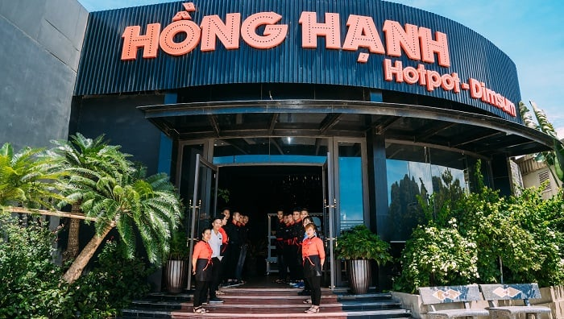
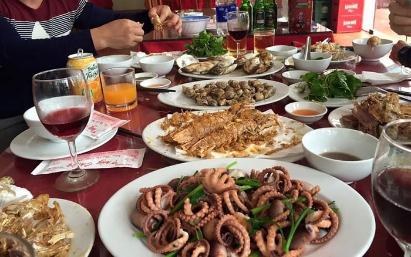
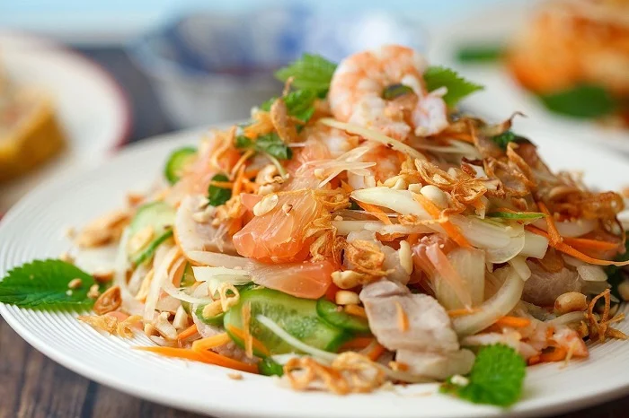

Ha Long Bay restaurants: The 5 BEST choices for your food tour
Exploring the local food at different Ha Long Bay restaurants is an indispensable part of your journey to this city. With diverse dishes, unique flavors, and fresh ingredients, these 5 recommended restaurants in Ha Long will surely take you aback.
1. Hong Hanh 3 Restaurant
Coming to one of the best-reviewed Ha Long Bay restaurants in Bai Chay, your taste buds will be tempted through a journey of foods and flavors. Hong Hanh 3 Restaurant provides diners with flavorful delicacies made from all kinds of fresh seafood, such as clam, squid, fish, etc. Their rich and delicious flavors add to the spacious and clean space, as well as a stunning view of the beach and Bai Chay Bridge.
Due to a great number of good reviews, Hong Hanh 3 Restaurant is very popular and often fully booked. If you don’t want to miss out on this restaurant, you should make reservations before arrival through the hotline mentioned above.

Besides good Ha Long food, the staff here are quick, supportive, and attentive (Source: Collected)
2. Thuy Chung Seafood Restaurant
Thuy Chung Seafood Restaurant is a must-visit place for all seafood lovers. Not only does this restaurant offer exotic Vietnamese specialties at affordable prices, it also attracts visitors with a clean-and-clear space and cozy interior design. This restaurant is an ideal place for both large and small groups of diners.

Thuy Chung Seafood Restaurant is one of the top-rated Ha Long Bay restaurants (Source: Collected)
3. Cua Vang Ha Long Restaurant
Your food tour in Ha Long will not be complete if you miss out on the culinary delights at Cua Vang (Golden Crab) Restaurant. This is among the most recommended Ha Long Bay restaurants for foreign tourists who are addicted to luxurious and fresh seafood.
The exquisite dishes at Cua Vang are made based on a traditional family recipe that has been passed down from generation to generation. This makes all their dishes come with natural flavors and original tastes. Aside from an extensive seafood menu, this restaurant also offers a wide range of Eastern, Vietnamese, and Western food.
Cua Vang Restaurant serves homemade Vietnamese food in Ha Long Bay besides a wide range of Eastern and Western food (Source: Collected)
4. Co Ngu - One of the best Ha Long Bay restaurants
A restaurant that should also be on the top of your list is Co Ngu Restaurant. Standing out from other seafood Ha Long Bay restaurants, it guarantees a most authentic seafood experience with both Asian and European specialties, such as Norwegian salmon served with shrimp and onion sauce, grilled lobster, and shark fin soup.
Moreover, you can sit in a chilling bar on the third floor of the restaurant, admire the wonderful view of Ha Long Bay, and enjoy the nice beverages here.

Co Ngu has good seafood served in Asian and European styles and a chilling bar (Source: Collected)
5. 1958 Restaurant - A good place to explore Ha Long cuisine
Taking advantage of seasonal specialties, 1958 Restaurant offers a wide range of Ha Long Bay foods. The dishes here are all made from fresh seafood and local ingredients, by the hands of expert chefs to bring incomparable flavors and visuals to all visitors.
1958 Restaurant - A good place to explore food in Ha Long Bay (Source: Collected)